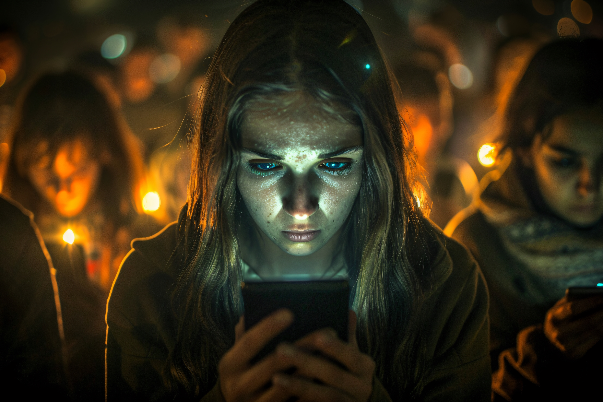
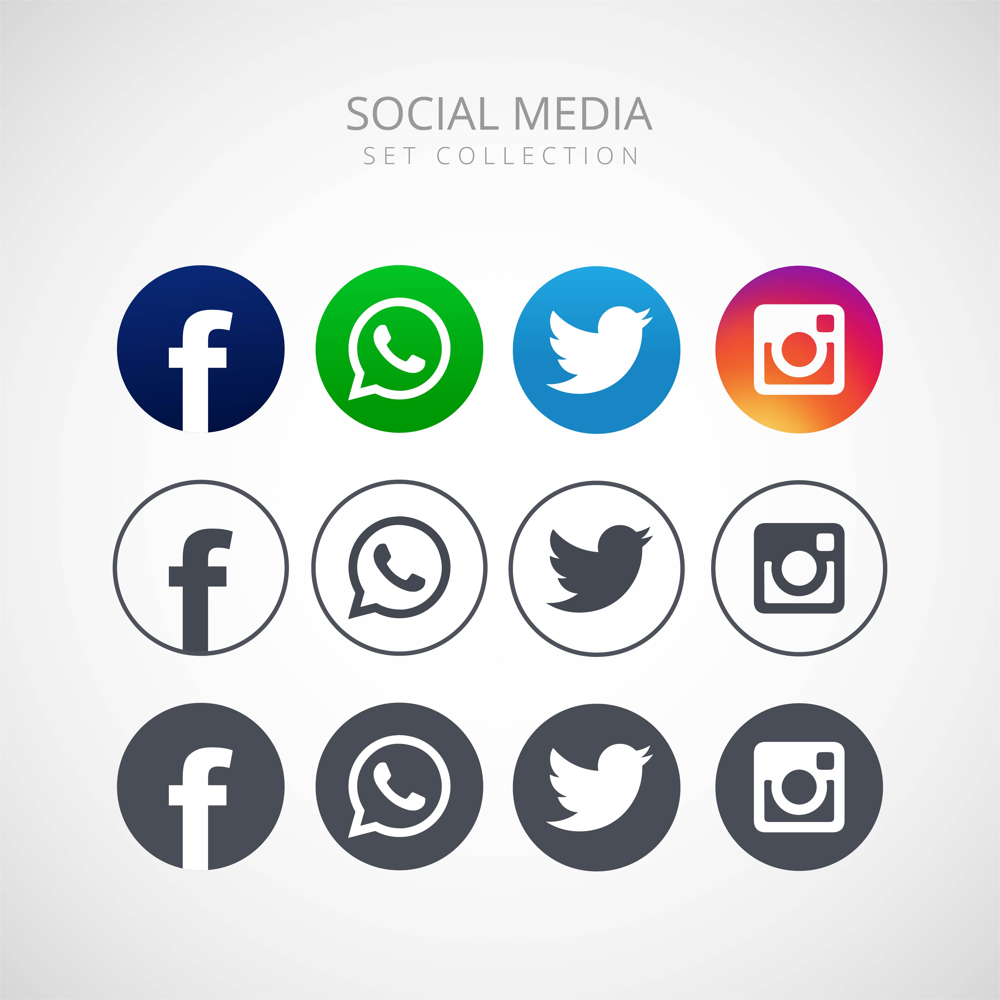

Vantagens das redes sociais
-
Comunicação rápida: As pessoas conseguem conversar instantaneamente por mensagens, chamadas e vídeos.
-
Compartilhamento de informações: Notícias, conteúdos educativos e acontecimentos podem ser divulgados rapidamente.
-
Aprendizado: Muitas pessoas usam redes sociais para estudar, aprender idiomas, receitas, tecnologia e outros assuntos.
-
Divulgação de negócios: Empresas usam redes sociais para propaganda, vendas e atendimento ao cliente.
-
Entretenimento: Vídeos, memes, músicas e transmissões ao vivo ajudam no lazer das pessoas.
-
Aproximação de pessoas: Amigos e familiares distantes conseguem manter contato facilmente.
Perigos das redes sociais
-
Fake news: Informações falsas podem se espalhar rapidamente e enganar muitas pessoas.
-
Cyberbullying: Ofensas, ameaças e humilhações virtuais podem prejudicar a saúde mental.
-
Vício em redes sociais: O uso excessivo pode causar ansiedade, falta de concentração e perda de tempo.
-
Golpes virtuais: Criminosos usam redes sociais para roubar dados pessoais e aplicar fraudes.
-
Exposição excessiva: Compartilhar informações pessoais pode colocar a segurança em risco.
-
Comparação social: Muitas pessoas acabam se comparando com vidas “perfeitas” mostradas na internet, causando baixa autoestima.
Vicio e os Perigos das redes sociais

O uso exagerado das redes sociais pode fazer com que a pessoa passe muitas horas conectada, deixando de estudar, dormir ou realizar outras atividades importantes. Esse excesso pode causar ansiedade, dificuldade de concentração, estresse e até dependência emocional. Muitas pessoas sentem necessidade de verificar notificações o tempo todo, o que pode prejudicar a saúde mental e o convívio social. Além disso, o uso constante do celular pode diminuir a produtividade e afetar a qualidade do sono.
Outro perigo das redes sociais é a influência negativa que alguns conteúdos podem causar, principalmente entre crianças e adolescentes. Desafios perigosos, discursos de ódio e conteúdos inadequados podem afetar o comportamento das pessoas. Também existe o risco de invasão de privacidade, já que informações pessoais podem ser usadas de maneira errada por desconhecidos ou empresas. Em alguns casos, o uso excessivo das redes sociais pode causar isolamento social, fazendo com que a pessoa se afaste do contato presencial com amigos e familiares.
CURIOSIDADES

-
O Facebook foi criado em 2004.
-
O Brasil está entre os países que mais usam redes sociais no mundo.
-
Influenciadores digitais conseguem ganhar dinheiro produzindo conteúdo na internet.
-
O TikTok ficou famoso pelos vídeos curtos e virais.
-
Milhões de fotos, vídeos e mensagens são publicados diariamente nas redes sociais.
-
Algumas pessoas passam mais de 5 horas por dia usando redes sociais.